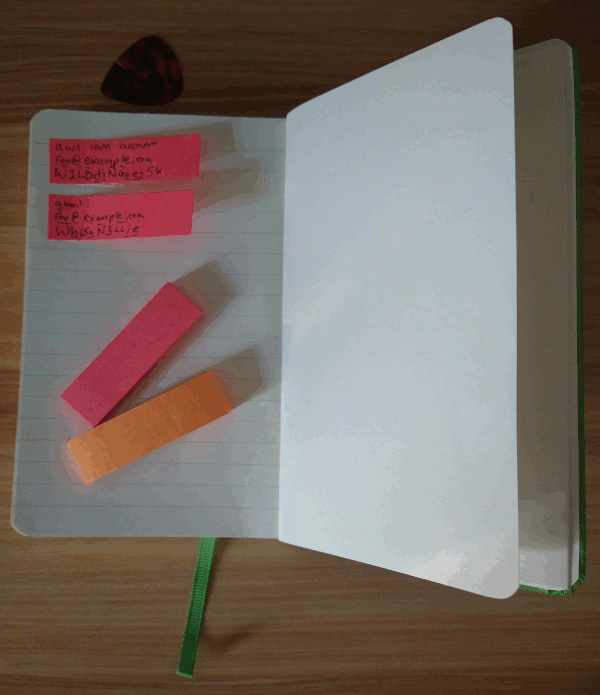

2022-02-26 ♀
#Notes, #Think about it
#Notes, #Think about it
QR Code Goes Here (Someday)
After noticing Rat Factor's note system [1] on Hacker News [2] I started thinking about how I take notes. Inspired by Mr. Factor's article, I decided to document my own system.
Let me start by saying I'm not encouraging you to adopt my system. It works for me, but you're a different person with different requirements. I encourage you to read this page and see if there's anything you can use, but I will not be offended if you decide to pass on my system.
I do encourage you to think about how you take notes. As a sophomore in college I adopted the Cornell System for Note-Taking [3] and it helped greatly. Simple changes in the way you think about note-taking can notably improve the utility of your notes.
While I keep telling myself I will adapt this system to a note-taking app, it is really for taking notes on pen and paper. You can use it with virtually any word processor or text editor, but pen and paper is where this system has the most utility.
My system does not require the use of coloured ink and you are under no obligation to use coloured ink if you adopt this system. But if your colour perception is decent, it can help to highlight things you're trying to find with different colour inks. I use either a 4-colour ballpoint pen (like this one from BiC [4]), a PILOT 0.38mm Juice Gel Ink Ballpoint Pen 12 Color set [5], or a PILOT Disposable Fountain Pen 3 Color Set [6]. Props to Mr. Factor (aka Dave Gauer) for recommending the PILOT 0.38mm Juice Gel Ink pen.
The purpose of the journal entry system is, as David Allen says [7], to "get ideas out of my head." The reason I developed this system was to improve my ability to find details in notes I had written to myself in journals. I use a Zettelkasten type system [8] when writing notes about specific subjects, but my journals are a chronological record of random thoughts and important details. I need to get these things out of my head so I can get back to useful work, but I eventually need to find the notes I write down.
Writing notes is easy. Finding notes you've written is hard. My note taking system is intended to help find things I've written down. I use "callouts" to highlight different types of specific details so they're easier to find. I have callouts for to-do items, open questions, important changes, agreements and random important things. You may want to add your own.
So what does a journal entry look like? I write them down as a header with a line across the page, a date, some hash-tags and a blank space for a QR Code. I haven't started putting QR Codes in my journal, but have a fantasy I'll eventually do it. If I didn't carve out a small space for the QR Code I would go nuts thinking about how I'll obscure small portions of my notes when I do eventually put QR Code stickers in my journals.
This is reasonable approximation of what my journal looks like:
And here's where the text starts.
Just imagine this was filled with "real" text, talking about "real" things.
Sometimes a page has multiple entries. Who knew?
Hell is other peoples' journals.
A few obvious things: First, it's in black ink. I like black ink. When I was in the Marines, the only type of pens we had were black pens. Blue pens were for civilians. If you want to see a Marine admin clerk freak out, use a blue pen on an official form. I'm used to black ink now and if most of the text is black, then the blue, red, green (and sometimes purple) callouts are easier to find.
I use planetary symbols after the dates to denote the day of the week. You should probably just put the first couple of letters of the day, it's easier. But I've been using planetary symbols for more than half my life. Not using them seems weird. If you want to use planetary symbols to represent the days of the week, these are the ones I use:
| ☉ | Sunday |
| ☽ | Monday |
| ♂ | Tuesday |
| ☿ | Wednesday |
| ♃ | Thursday |
| ♀ | Friday |
| ♄ | Saturday |
Lastly, it's clear I like margins. They're a great place to scribble small notes. I also put callout "icons" in the margin, which makes them much easier to find.
About To-Do Items
One day I had to find a pair of to-do items in my journal. I found them, of course, but I realized it would have been much easier had I included an "icon" next to them; a graphical symbol representing the concept of a to-do item. After several icons, I settled on a box. When I completed a task, I went back and put a check-mark in the box. If the task was "overtaken by events" and would not be completed, I put an "X" through it.
When I left the marines and could use blue pens again, I wrote to-do items in blue. My colour vision is good enough that blue stands out next to the black of "normal" text. That's not true for everyone; feel free to pick a different colour. Or no colour. Here's an example of a journal page with to-do items:
Wondering if I'm going to get called up out of the reserves.
☑ Call Kansas City and ask if my DD-214 was mailed out.
Maybe I should try to find my gear in case they call me back or I have to prove I still have it.
☑ Get gear out of storage.
☒ Inventory gear. Is it all there?
Called Kansas City, they said the DD-214 was mailed out last Thursday.
From this example, I can see that I listed several to-do items. The first two I completed, but the last one was abandoned.
When Things Change
Sometimes things change. Important changes get a red exclamation point. Consider this example:
SgtMaj Havens says there's no way I'm going to A-School this summer; it's okay to register for summer classes.
! SgtMaj Havens called to say he has orders for me to go to my A-School at LeJeune.
Called registrar, I can drop Psych class as incomplete-passing and finish it next fall.
☑ (1987-06-14) Get a note from MAG-41 to housing office so I can get out of my dorm lease without penalty.
In this example we can see Sergeant Major Havens had "incomplete information" about my second increment of Initial Active Duty for Training Purposes. That I had to drop my Psych class in the summer of '87 and report to Camp LeJeune for training was an important change, so it got a red exclamation point.
When to-do items have a due date, I insert the date between the box and the text of the callout. In this example, we can see I had a deadline for getting a note about my deployment from the MAG-41 admin office.
Random Things
I ocassionally realize something is important after writing it down. In this case I put a purple dot in the margin. If I don't have a purple pen on me, I'll put a blue dot in the margin. Here's an example:
I'm pretty sure I don't need to pull maintenance on the Fiat before my trip to the bay area.
⬤ More likely I'll just call the mechanic at (831) 555-1212 and schedule an oil change while I'm down there.
Seems like I'm about 1000 miles shy of when I need an oil change and I bet they can figure out what air filters I need.
In this example I wrote down the phone number for a mechanic. Later I realized I wanted to highlight it so it would be easier to find. This isn't a major change, or a to-do item, so I just put a purple dot next to it.
I used to use the Cornell Note-Taking System [3] for meeting notes, but soon realized it wasn't the correct tool for the job. The Cornell system is great for taking notes in class, but meeting minutes? Not so much. After reverting to a free-form style, my meeting minutes started looking like my journal entries, though I don't try to wedge QR Codes into meeting minutes.
Meeting minutes still have a date and hash-tags in the header, and also a list of attendees.
Callouts for meeting minutes include "open questions" and "agreements". And I still use to-dos, major changes and purple dots.
"Open Question" callouts are just what you would expect: a question that hasn't been answered. I write them in blue ink and preface them with a big question mark. Like to-do callouts, open questings with a due date get that date inserted between the question mark icon and the text of the question.
"General Agreement" callouts indicate the meeting attendees agreed to something. It is often important to be able to find records of such agreements quickly. I use a green star for agreements. I wanted to use a thumbs up sign or shaking hands icons, but stars are considerably easier to draw.
Here's an example of what my meeting minutes might look like:
Bob says we're good for service switch-over
★Agree to cut-over old to new on Thursday, March 3rd.
? Do we have to get approval from IT?
☐ Find out what ticket category to JIRA items go in? Will IT get upset if we use the wrong category?
Alice described the DNS cut-over technique we'll use
Sriram verified we won't need any code changes.
In the meeting minuted here, there was general agreement when the login-service cut-over would occur, but we're still not sure we need to get the plan approved by IT. And there's a to-do item to find out what category IT wants us to use for our JIRA tickets.
I'm usually at home or in the office when writing meeting notes or journal entries. I usually use B6 or A4 sized notebooks or notepads for these kinds of notes. (That's approximately letter size or 5" by 8" size in the ANSI paper scheme.) But when I'm on the go, I have different requirements.
When out and about, I need a portable notepad
In my system, "Field Notes" are anything that gets written in a 3.7" x 5.6" (small) notebook. For me, that's mostly passwords and shopping lists. I should mention "Field Notes" is a trademarked term; I usually use it in a generic sense, but the people who make Field Notes ® note books probably prefer I use the registered trademark symbol when talking about their brand.
Dave Gauer (aka Rat Factor) recommends thin Field Notes ® books [1]. I prefer PAPERAGE small notebooks [9]. They're almost as easy to lay-flat as the Field Notes ® brand and have a harder cover and include an elastic band to secure them while they're in your pocket or backpack. Field Notes ® notepads are easier to lay flat and come in a variety of colours and designs. There is no shame in preferring Field Notes ® to PAPERAGE.
A typical entry for me would look like:
- Drop off taxes at the post office
- Meals: Veggie Chili, Tofu Thai Curry
- List:
- Paper Towels
- Fresh Thai Basil
- Green Pepper
- Zucchini or Japanese Eggplant
- Firm Tofu
- Lime Leaves
- Small Mushrooms
- TVP
- Eggs
- Bread
From this you can probably guess I don't bother with callouts on field notes and I eat mostly veggies. My notes often take up the whole page so it's rare to see lines separating different notes and I almost never include hash-marks.
I use small notebooks to record thoughts when I'm out of the house / office and to write things down I know I'll need when I'm out. I have a habit of looking at my small notebooks as I'm about to walk out the door or twice a week. (In the example above, I wrote a note to remind myself to grab my taxes if I'm driving anywhere near a post office.)

I have a different small notebook which contains passwords. This one usually never leaves the house. I scribble usernames and passwords on POST-IT ® page markers [10] and then place them in the small notebook. When I change the password, I take the old page marker out and put in a new one. You may also notice I put a line above capital letters and a line below lower case letters.
Some people will tell you not to make colour semantically important because many people are colour blind. And that's very good advice. But my colour vision is pretty good, and this is a description of my personal note-taking system.
That being said, I've noticed my eye-sight deteriorate over the years and can envision a time in the future where I lose colour perception. So I made sure that everywhere colour is used, there's also a unique "icon". It will be harder to find things if I lose my colour vision, but not impossible.
I use a number of different writing implements. I use felt-tip pens and coloured pencils when designing things. I use fountain pens when writing notes to people. In my journal, I currently use several PILOT Juice Gel Ink pens [5]. But for scribbling in small notebooks, I use a BiC 4 Color pen [4].
I don't belong to the Amazon affiliate program, so I don't get a kick-back if you click on a link to their online store. I'm mostly neutral about Amazon, but they do make it easy to find pens and stationary on their site.
The typeface used in the note pages above is Shadows Into Light by Kimberly Geswein [11]. It is released under the SIL Open Font License (OFL) [12]. Thank you, Kimberly, for making this font available to the Internet community.